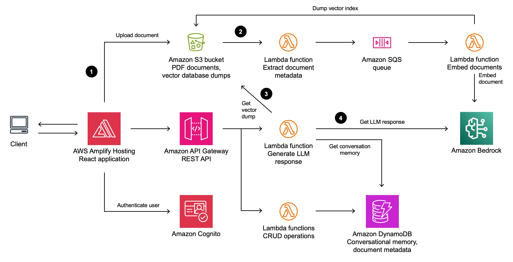

Aadarsh Patel
Computer Science · University of Maryland · May 2026
This is my software engineering portfolio. I built it to show how I approach problem solving, from designing cloud systems to turning raw data into something people can understand and act on. I care about the whole picture: what problem am I actually solving, how do I build it to scale, and will anyone know what to do with it when I'm done. You'll see that mix of thinking in all three projects here.
Each project has a story behind it. I've included context on what I built, why I made the choices I made, and what it shows about how I work. You can dig into the interactive visualizations and architecture diagrams, or just read the summary. I've tried to make each one accessible whether you're deep in the technical details or just want to understand what I did and why it mattered.
Use the navigation buttons at the top to jump between projects, or scroll down to see all three artifacts and browse from there. Each project page has a contextual statement, the work itself, and key insights about what I learned and what it demonstrates about my approach.
Chicago Robbery Pattern Visualization
An interactive D3.js web application revealing temporal and geographic robbery patterns across Chicago's neighborhoods.
AWS LLM Gateway Architecture
A production grade serverless blueprint for document aware conversational AI, designed, built, and led during a cloud engineering internship at Johns Hopkins APL.
Bitcoin Price Predictor
A data science pipeline applying statistical analysis and polynomial regression to forecast Bitcoin cryptocurrency price movements.
Chicago Robbery Pattern Visualization
Contextual Statement
This artifact is an interactive web visualization I created for CMSC 471 (Introduction to Artificial Intelligence) at UMD. The project explores robbery incident data from the City of Chicago's public crime database and surfaces predictable temporal and spatial patterns that would be not be so obviois in raw tabular data. Built with D3.js for interactive charting, along with standard HTML, CSS, and JavaScript, the application lets users filter by time of day, and day of week to discover when and where robberies cluster. The visualization transforms thousands of police report records into an intuitive, browser based experience that any non technical person, from a city council member to a community organizer, can explore without installing software or writing queries.
This project demonstrates several competencies I value as a developer entering the workforce. First, it reflects my ability to work across the full web development stack: from data ingestion and cleaning to DOM manipulation and responsive layout. Second, it showcases my comfort with D3.js, a library that demands a deep understanding of SVG, scales, projections, and data joins rather than offering the plug and play convenience of higher level charting tools. Choosing D3 was a deliberate decision to prioritize expressiveness and control over ease of implementation. Third, and perhaps most importantly, it represents my belief that data work is incomplete until it reaches an audience. Raw analysis locked inside a notebook has limited impact. An accessible, interactive visualization invites exploration, builds trust in the findings, and can genuinely inform decisions about resource allocation and public safety. This project sharpened my understanding that the last peice of data science is communication, and that front end engineering is often the means for that communication.
AWS LLM Gateway Architecture

Contextual Statement
This artifact is an architecture blueprint for an "LLM Gateway", a fully serverless, document context conversational AI platform built entirely on AWS services. I designed and led this project during a cloud engineering internship, serving simultaneously as the lead software engineer, AWS architect, and project manager. The system allows end users to upload PDF documents through a React front end hosted on AWS Amplify. Those documents are stored in S3, processed by a chain of Lambda functions that extract metadata and generate vector embeddings via Amazon Bedrock, and queued through SQS for asynchronous ingestion. When a user asks a question, a separate Lambda function retrieves the relevant vector dump from S3, fetches conversation memory from DynamoDB, and sends both the contextual embeddings and the query to Amazon Bedrock to generate a accurate, document context response. User authentication is handled by Amazon Cognito, and all CRUD operations for conversation history and document metadata flow through DynamoDB.
This blueprint reveals several dimensions of my professional capability. On the technical side, it demonstrates fluency in cloud native, event driven design: choosing SQS to decouple document ingestion from the request path, using DynamoDB for low latency conversational memory, and leveraging Bedrock's managed inference rather than self hosting models. Each decision reflects cost awareness, scalability thinking, and an understanding of AWS's shared responsibility model. On the leadership side, this project required me to translate a vague business requirement ("let our team chat with internal documents") into a concrete technical plan, decompose it into milestones, coordinate with management, and deliver a working prototype within the three month internship timeline. The experience taught me that architecture is as much a communication artifact as a technical one: this single diagram became the primary tool for aligning engineers, product managers, and executives on scope, data flow, and security boundaries. It solidified my wish to work at the intersection of cloud infrastructure and applied AI, where the challenge is not just building intelligent systems but making them reliable, secure, and production ready.
Bitcoin Price Predictor
Contextual Statement
This artifact is a Jupyter Notebook based data science project that investigates the question "Is Bitcoin a profitable buy?" Using a Kaggle dataset of daily Bitcoin prices from late 2014 through early 2022, I built a complete analytical pipeline: data curation and cleaning with Pandas, exploratory analysis through Seaborn and Matplotlib visualizations, formal hypothesis testing with Pearson correlation coefficients and Augmented Dickey Fuller tests, and predictive modeling using both linear and degree 12 polynomial regression via scikit learn. The project found a moderate positive correlation between time and volatility (PCC ≈ 0.60), confirmed a statistically significant relationship between trading volume and closing price, and produced a polynomial regression model that predicted Bitcoin's rise into the $70,000 range during 2024, closely aligning with actual market outcomes when Bitcoin hit an all time high of $73,000 in March 2024. The linear regression model achieved an R² of 0.9996 on training data, while the test RMSE of approximately $163 demonstrated strong generalization.
This project showcases my ability to execute the full data science lifecycle, from formulating a driving question through data exploration, statistical testing, model selection, and interpretation of results. Several methodological choices reflect skills I want to carry into my career. I used multiple statistical frameworks (Pearson, chi square, ADF) rather than relying on a single test, demonstrating that I understand the importance of converging and different aspects of evidence. I explicitly addressed overfitting risk by discussing train test splits, polynomial degree selection, and the tension between model complexity and generalizability. These are concepts that matter as much in production ML systems as in academic exercises. I also framed every statistical finding in plain language aimed at a non technical investor audience, reinforcing my belief that analytical work must be communicated clearly to create real value. More broadly, this notebook reflects my curiosity about financial markets and my willingness to engage with high stakes, inherently uncertain domains. These are qualities that will serve me in data engineering and applied machine learning roles when working with different types of data.